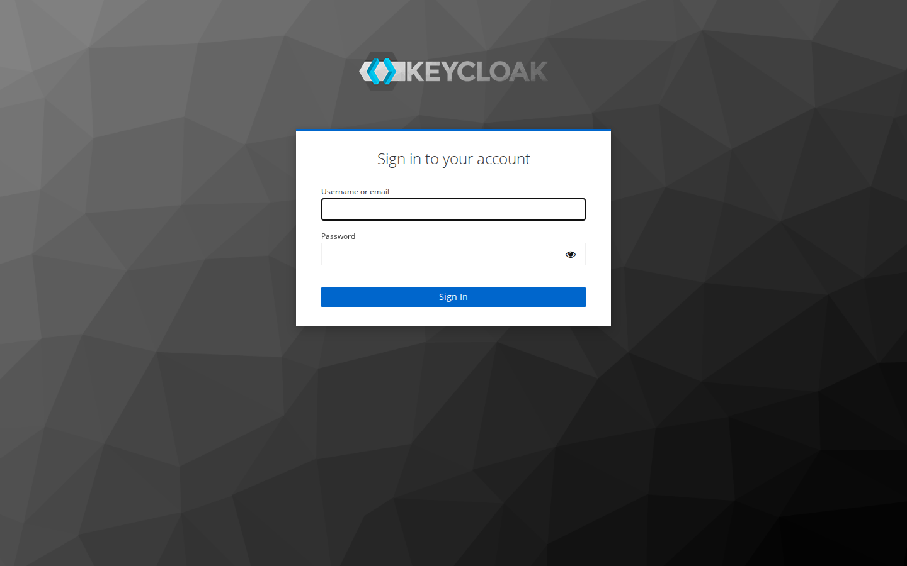
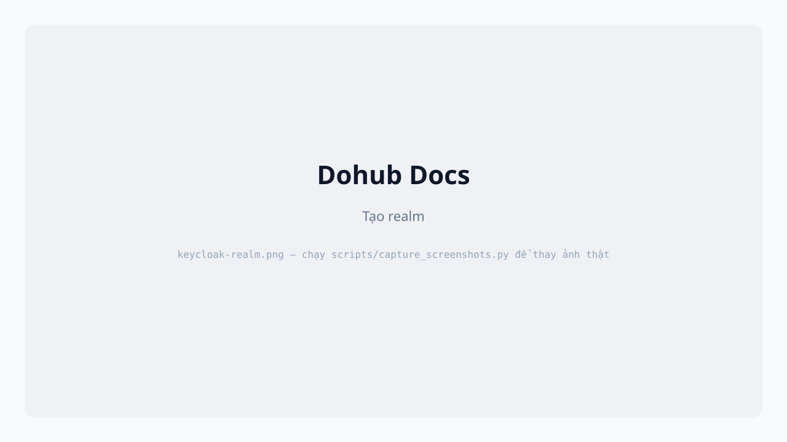
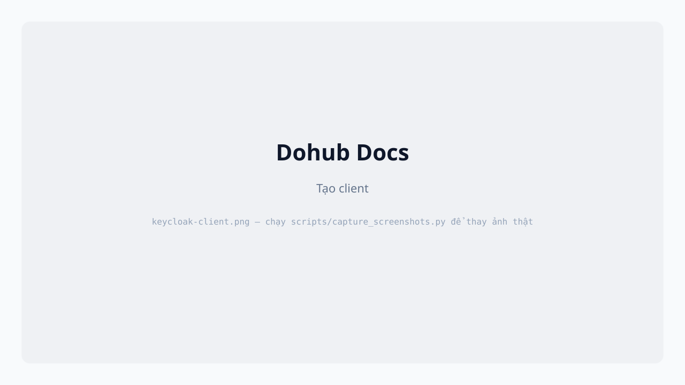
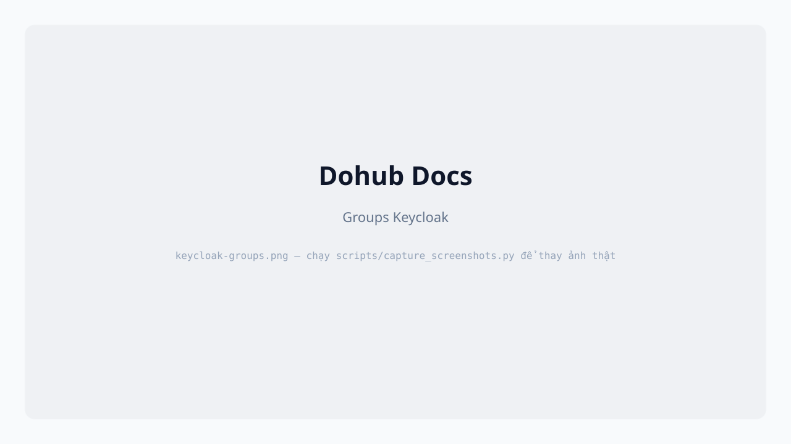

Keycloak triển khai trên Dohub tại keycloak.iaihub.uet.edu.vn — IAM cho các ứng dụng (Overleaf, …).

Đăng nhập admin console
- Mở
https://keycloak.iaihub.uet.edu.vn/admin/.
- Đăng nhập tài khoản admin realm
master (do operator cấp).
Tạo Realm

- Dropdown realm (góc trái) → Create realm.
- Realm name — ví dụ
overleaf.
- Create.
Tạo Client

- Clients → Create client.
- Client ID — khớp cấu hình app (ví dụ Overleaf OIDC).
- Client authentication — ON nếu confidential client.
- Valid redirect URIs — URL callback app.
- Web origins — CORS nếu cần.
- Lưu Client secret (tab Credentials) cho app.
Groups

- Groups → Create group — ví dụ
overleaf-users.
- Members — Add member, tìm user (ví dụ
daovietanh19 cho demo Overleaf).
Roles
- Realm roles hoặc Client roles → Create role.
- Gán role cho group: Groups → group → Role mapping → Assign role.
Ứng dụng Overleaf thường map group Keycloak → quyền truy cập project — xem Overleaf.